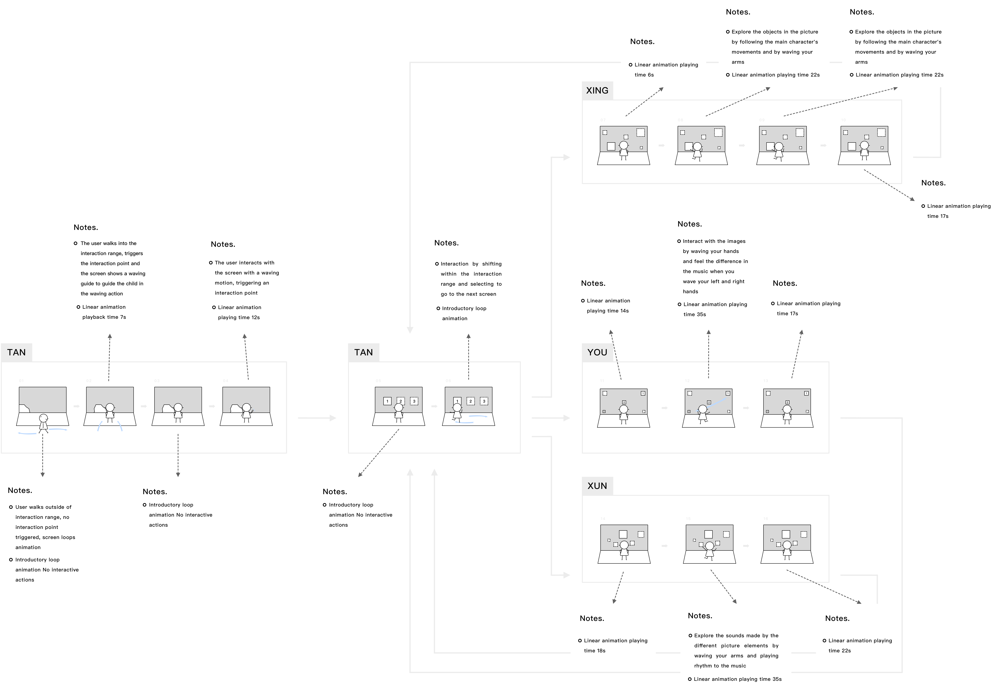

← BACK TO PROJECTS

Design Preschool Children Embodied Interaction to Learn Music
Author: Baihui Chen and Kun Qian
Developer and Interaction Designer: Baihui Chen
Animator: Kun Qian
Supervisors: Haiyan Li and Keyue Wang
Keywords: Multimodal, Embodied interaction, Music, Children
1. BACKGROUND
Music education benefits children's mental and intellectual development in early childhood (Hallam, 2010). Guided by child-centered design principles, we propose the Multimodal Interaction of embodied cognition for 4-6-year-old children (Chen, Druga, Tang & Xie, 2019). In order to lower the barrier of entry for younger kids, we want to tap into natural and accessible ways that they understand and experience musical knowledge. This study will improve preschoolers' perception of music through multimodal interaction (Giannopulu, 2013).
2. INTERACTION DESIGN PRINCIPLES
2.1 Interactive systems
- The overall duration of the work should be appropriate to the attention of the child and limited to 10 minutes.
- The projection should match the height of the preschooler to the size of the child's interaction.
2.2 Children's interactive movement design
- The purpose of the interaction should be clear in concrete scenarios, and the design of the action should be intuitive and effective.
- Interaction mapping should be established between the user's body and the agents in the digital world, such as movement mapping, and limb position.
2.3 Interaction scene construction
- The work should be guided by the intentionality of the scenario and should suggest situational guidance and metaphors. This can be achieved through the design of guiding characters and animated story narratives that provide clear guidelines for interaction
- The work should have a sense of spatial orientation, as there are z-coordinates in addition to x and y coordinates in 3D space. Orientation metaphors are needed in interactive projection design to guide and control audience behavior.
- For interactive projection there should be real-time feedback in multiple media forms. Therefore, visual and auditory complementary feedback results should be taken into account in the design process.
3. INTERACTION DESIGN SKETCHES & INTERACTION DESIGN STORYBOARD
The work is mainly divided into four parts: "TAN," "XUN," "XING," and "YOU." In terms of content structure, it mainly adopts a general division format, with the opening part "Seek," guiding users to gradually establish a cognitive relationship with the scenario, allowing them to take the initiative and participate in the development of the whole work. The opening section, "Seek," guides the user to gradually establish a cognitive relationship with the scenario, allowing the user to actively participate in developing the whole work. The musical elements are experienced mainly in natural ambient sounds, loudness (left hand), speed (right hand) when conducting, and the rhythm of the music.
Fig1. Interaction Design Sketches

Fig2. Interaction Design Storyboard
5. INTERACTION SYSTEM
Based on the above design principles, the characteristics of the children's age and behavior, and the international standard height data, the projection size of the interactive system was set at 170cm*40cm (Figure 6-1) and the projection length was set at 3 minutes and 15 seconds without interaction. The interaction was mainly in the form of physical interaction, with the use of embodied and familiar interaction actions. In addition, the environment is also an important part of the experience, so the work builds immersive scenarios to give children a better experience, hence the choice of space-based physical interaction projection.
Fig3. Interaction system design diagram